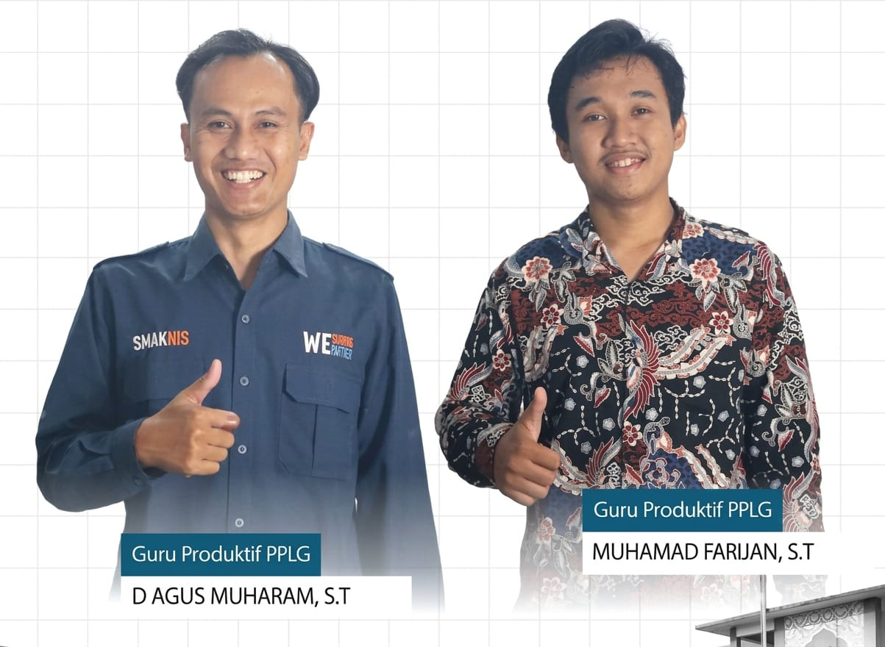

TENTANG KAMI
Membangun Generasi Masa Depan
SMK Nurul Islam Cianjur merupakan lembaga pendidikan kejuruan yang berkomitmen dalam mengembangkan potensi peserta didik melalui pendidikan, keterampilan, dan pembentukan karakter.
Dengan berbagai program keahlian yang tersedia, sekolah berupaya membekali peserta didik dengan pengetahuan dan kompetensi untuk menghadapi perkembangan dunia kerja maupun pendidikan yang lebih tinggi.
Status Sekolah
Swasta
Akreditasi
A
Lokasi
Cianjur, Jawa Barat
Jenjang Pendidikan
Sekolah Menengah Kejuruan